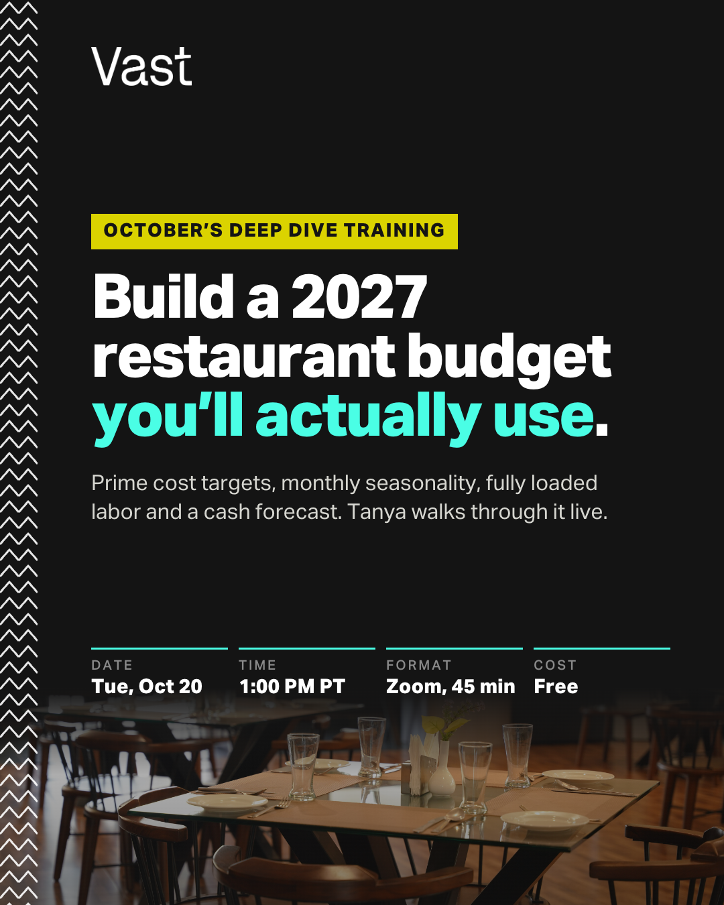
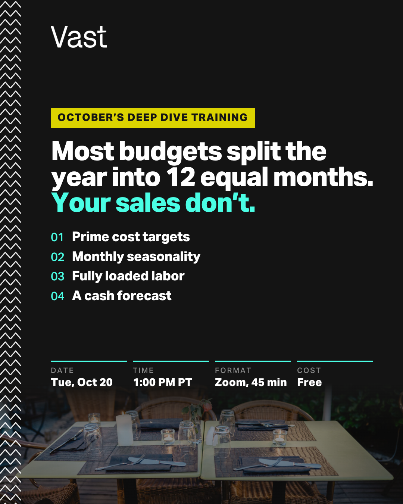
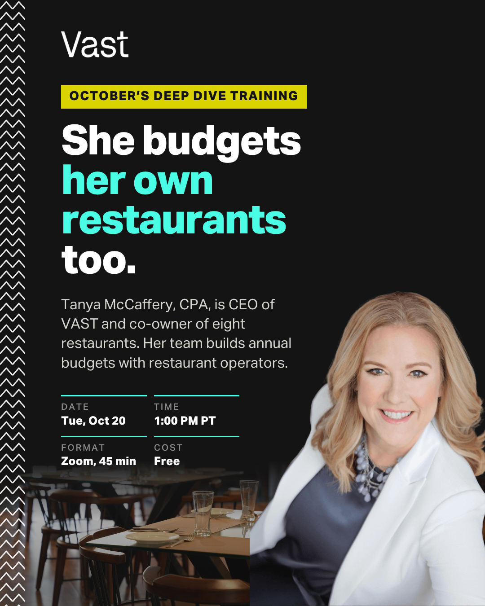

| Restaurant Budget | Match |
|---|---|
| "restaurant budget" | Phrase |
| "restaurant budgeting" | Phrase |
| [restaurant budget planning] | Exact |
| "restaurant annual budget" | Phrase |
| "restaurant operating budget" | Phrase |
| "restaurant budget 2027" | Phrase |
| "restaurant financial planning" | Phrase |
| "restaurant budget training" | Phrase |
| "restaurant budget webinar" | Phrase |
| "restaurant finance webinar" | Phrase |
| "restaurant owner webinar" | Phrase |
| "restaurant cash flow forecast" | Phrase |
| "restaurant sales forecast" | Phrase |
| [how to budget for a restaurant] | Exact |
| [how to create a restaurant budget] | Exact |